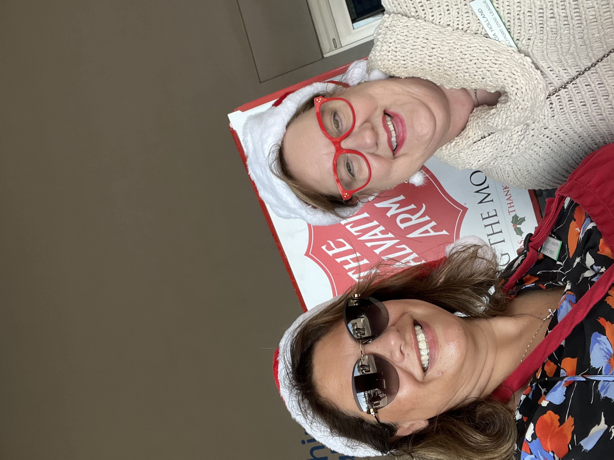
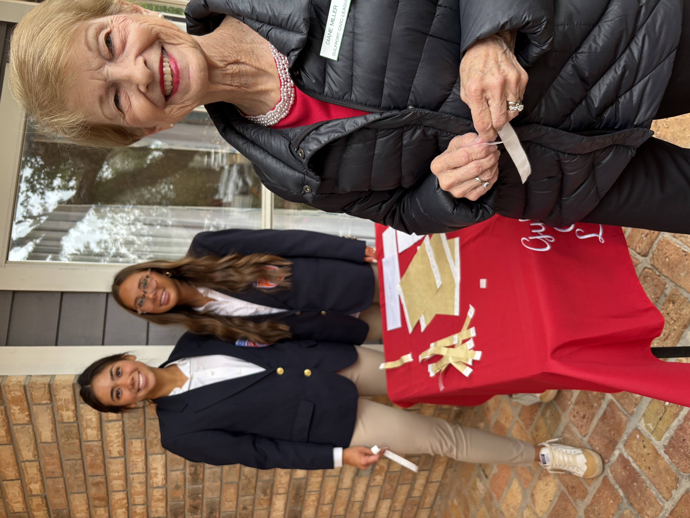

Special Needs Support
From Buddy Ball to Camp Able, we fund programs that bring belonging, sport, and joy to children and adults of all abilities.
A community of women dedicated to serving children and adults with special needs along the Mississippi Gulf Coast — funded each year by our beloved Christmas Tour of Homes.
The Civic League of Gulfport services special needs children and adults. It also provides other welfare needs and several one-time donations. The annual December Christmas Tour of Homes provides the funding for these services.
From Buddy Ball to Camp Able, we fund programs that bring belonging, sport, and joy to children and adults of all abilities.
Backpack Buddies feeds students through the weekend; holiday baskets keep families nourished through the season.
We stand beside the Women's Resource Center, Gulf Coast Center for Non-Violence, CASA, the Salvation Army and more.
We award scholarships to students with special needs, and to students pursuing careers that serve them.
In 1947, eighteen civic-minded women formed a service group to staff Gulfport's polio clinic — checking in patients, assisting the staff, and keeping waiting children entertained. They showed up every day.
Today, the Gulfport Civic League is a thirty-five-member community of women carrying that same spirit forward, meeting the needs of as many as we can with the gifts we are given.
Read our story →From bell-ringing for the Salvation Army each November to staffing the Tour of Homes each December, our members show up year-round.

Members from across the League take turns at the red kettles each November, supporting families and individuals through the holidays and beyond.

Volunteers, hostesses, and longtime members welcome guests at each home on the Tour — the afternoon that funds our year of service.